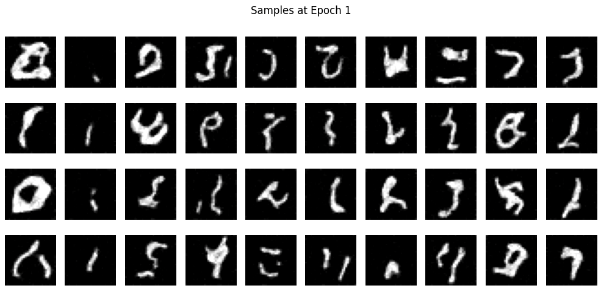
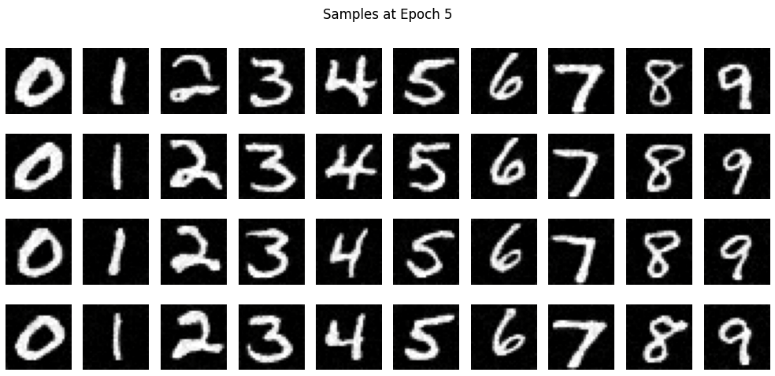
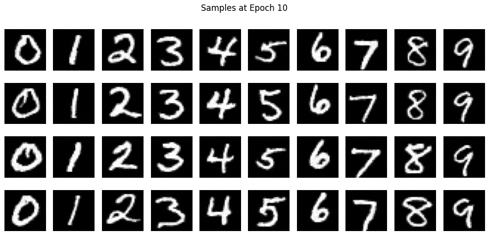
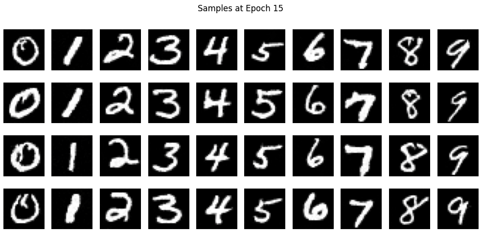
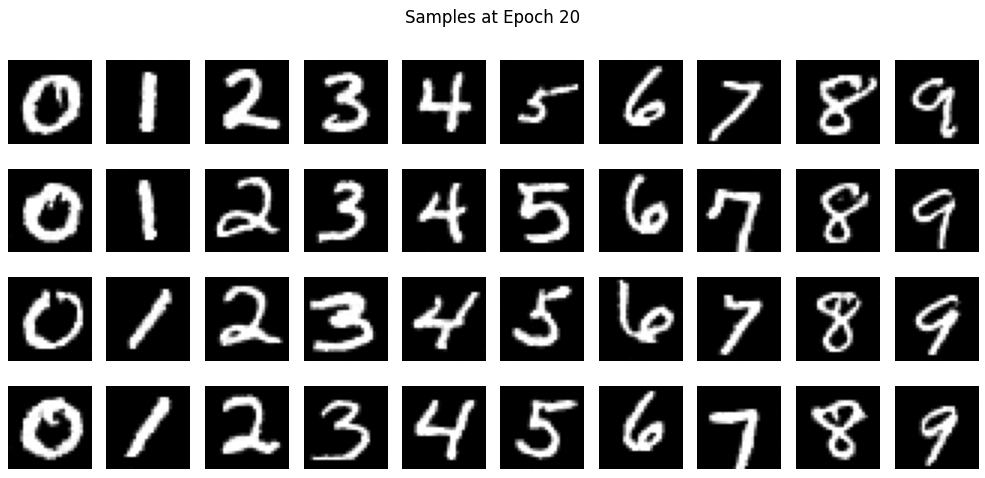

Fun with Diffusion Models!
Overview
In this project, I will explore way of generating images with sampling loops and leverage them to create optical illusions. Then, I will implement Unet architecture.
Part A: The Power of Diffusion Models!
1.1: Forward
The idea of diffusion model is to start with a clean image \(x_0\) and iteratively add noise to the image to get more noisy image of \(x_t\). This is what we called the Forward Process.
Below, I applied the forward process on UC Berkeley Campanile at a size of (64 x 64) with times [250, 500, 750].
1.2: Classical Denoising
Above, I was able to add noise to an image. There ways to denoise the noisy image and I will try denoising the image by applying Gaussian Blur Filter, which is not very effective.
As I applied Gaussian Blur Filter, it did make the image look better, but it is still hard to see actual content of the image.
1.3: One-Step Denoising
As we explored the Gaussian Blur, it did not work quite well. Now, let's use diffusion model to denoise these images. I used UNet that is already been trained with large data of \( (x_0, x_t) \) pairs of image. Additionally, since this diffusion model was trained with text conditioning, I will use ("a high quality photo") as a text promt embedding
How it works is that we first estimate the noise in the noisy image using the pretrained diffusion model. Then, we remove this estimated noise from the noisy image to get to reconstruct the image.
As we can observe, the less noise in the image, it predicts better. For instance, the image at t 750 has a shape of Campanile, but the it looks quite different then Campanile.
1.4: Iterative Denoising
In previous part, we denoised the image using UNet which did a great job compared to Gaussian Blur. I was using one-step where I tried to reconstruct with one time step but diffusion model is designed to denoise iteratively.
We can start from timestep T = 1000, but it would cost too much as it needs to iterate more. So, we made a variable called stirded_timesteps wher eit contains a less number of timestep than just range of time from 0 to 1000. Here I used stride of 30.
\[ x_t' = \frac{\sqrt{\bar{\alpha}_t' \beta_t}}{1 - \bar{\alpha}_t} x_0 + \frac{\alpha_t \sqrt{1 - \bar{\alpha}_t'}}{1 - \bar{\alpha}_t} x_t + v \sigma \]
The equation above is what we used to do the iterative denoising. For i_start, I used 10.
As observed, the iteratively denoised image has more details in trees behind.
1.5: Diffusion Model Sampling
In previous part, we are providing a image of UC Berkeley's Campanile, but what if we input random noise and have "a high quality photo" as text promt embedding? I sued torch.randn to make random noise image and feed into the function that we implement in the previous part.
I was able to get some images that looks like something, yet some of them are hard to see what they are.
1.6: Classifier-Free Guidance (CFG)
In previous, I observed that the images generated are not so good and in order to improve the quality of the image, we can expand its diversity with a technique called Classifier-Free Guidance.
In CFG, we add additional unconditional noise estimate and compute the final noise estimate by \[ \epsilon = \epsilon_u + \gamma (\epsilon_c - \epsilon_u) \]
For text embeddings, I put ("a high quality photo") conditional embedding and ("") unconditional embedding and \(\gamma = 7 \).
With CFG, images look much better and clear enough to see what they are.
1.7 + 1.7.1: Image-to-Image Translation & Hand-drawn and Web Images
In this part, we implemented SDEdit. This algorithm and process allow infer more details with pusing noisy images back onto the manifold of natural images. For starting index, I used [1, 3, 5, 7, 10, 20].
Below is series of SDEdits of an image that I got from a web:
Below is series of SDEdits of hand drawns images:
As you can see, as i_start increases, the image becomes more similar to the original image.
1.7.2: Inpainting
We can make this more intersting by implementing inpainting! With \( x_t \gets m x_t + (1 - m) \text{forward}(x_{\text{orig}}, t) \), we can make a mask and generate a new image for that area.
It is interesting to see how the generated image adapts color and image on the background and creates seamless result image!
1.7.3: Text-Conditional Image-to-Image Translation
For this part, we are going to use SDEdit, but with a projection by a text promt.
For these images, I used the text prompt embedding "a rocket ship."
For these images, I used the text prompt embedding "a man wearing a hat."
For these images, I used the text prompt embedding "a lithograph of waterfalls."
1.8: Visual Anagrams
In this part, I created optical illusions with diffusion model. With two text promt embeddings, I created an image that has two contents if flipped upside down.
\[
\epsilon_1 = \text{UNet}(x_t, t, p_1) \] \[
\epsilon_2 = \text{flip}(\text{UNet}(\text{flip}(x_t), t, p_2)) \] \[
\epsilon = \frac{\epsilon_1 + \epsilon_2}{2}
\]
By using this equation, I was able to get an image that has optical illusions.
Below image is generated with 'an oil painting of people around a campfire' and 'an oil painting of an old man'
Below image is generated with 'an oil painting of a snowy mountain village' and 'an oil painting of an old man'
Below image is generated with 'an oil painting of a snowy mountain village' and 'a man wearing a hat'
1.9: Hybrid Image
Similar to previous part, we can create a composite noise estimate with two text promts which then can be combined with low frequencies noise estimate and high frequencies noise estimate. With closer look, we should be able to see the first text embedding and far away for the second text embedding.
\[
\epsilon_1 = \text{UNet}(x_t, t, p_1) \] \[
\epsilon_2 = \text{UNet}(x_t, t, p_2) \] \[
\epsilon = f_{\text{lowpass}}(\epsilon_1) + f_{\text{highpass}}(\epsilon_2)
\]
By doing so, I was able to get an image that contains two different text promt embeddings. For gaussian blur, I used 33 for kernel size and 2 for sigma.
Below image is generated with 'a lithograph of a skull' and 'a lithograph of waterfalls'
Below image is generated with 'a rocket ship' and 'a pencil'
Below image is generated with 'a lithograph of a skull' and 'an oil painting of people around a campfire'
Part B: Diffusion Models from Scratch!
1: Implementing the UNet + Training + Out-of-Distribution Testing
In previous part, I utilized Unet to generate and denoise image. In this part, I will be implementing the Unet.
In order to fully implement the Unet architecture, following needs to be implemented:
Conv, DownConv, UpConv, Flatten, UnFlatten, ConvBlock, DownBlock, UpBlock
After implementing the Unet, I made some helper functions to train this model. I made functions for displaying images, adding noise to bathes of images and normalizing the images.
Image below is images with various noise level per sigma:
For training the model, I used 128 for the number of hidden state and 256 for batch size of MNIST dataset. This allowed to optimally utilizes GPU while maintaining stable gradient for the dataset. To ensure faster and efficient training, I made all operations performed on the GPU. For loss funciton and optimzer, I used MSELoss and Adam. Additionally, I incorporated autocast for mixed precision training which reduced the memory usage and speed up computations.
I was able to get optimal loss curve and here are the result after 1st epoch abd 5th epoch for sigma = 0.5
As you can see epoch 5 has much better result than epoch 1. Numbers are clear and has no gray artifacts.
Our model is now clearly able to perform well on sigma=0.5. To see how it perform on other noise levels, I tested on sigma that wasn't trained on. I used [0, 0.2, 0.4, 0.5, 0.6, 0.8, 1]
As you can see, up to sigma=0.6, it can denoise the image properly. Beyond that, it struggles, though it still manages to some extent, but the result is unclear and contains gray artifacts.
2.1 - 2.3: Adding Time Conditioning to UNet + Training the UNet + Sampling from the UNet
In previous part, I implemented Unconditional Unet and for this part I will implement Time Conditioned Unet (DDPM)
To add the Time Conditioning on the current Unet, we can simply add FCBlock which we will use it to inject the conditioning signal.
After implementing the Unet, I made some helper functions to train this model. I made functions for displaying images, adding noise to bathes of images and normalizing the images.
Previously, our loss function was calculating bewteen predicted denoised image and actual images. For our second part, we want our model to predict noisy images by doing \(L = \mathbb{E}_{z,x} \| \epsilon_\theta(x_t, t) - \epsilon \|^2 \) where \( \epsilon \) ~ \( N(1, 0) \) and \( \epsilon_\theta(x_t, t) \) is prediected noise.
With this, we will denoise the image \(x_t\) iteratively to get better result:
\[
x_t = \sqrt{\bar{\alpha}_t} x_0 + \sqrt{1 - \bar{\alpha}_t} \epsilon
\]
As for training the model, we randomly pick a image using torch.randn and random t (time). Then, we denoise by predict noise in \(x_t\) and we repeat the process until we get reasonable results.
After training the model, we need can finally get predicted images.
I used follow algorithm for sampling the results
As you can see, the results get better and better as the number of epochs increases during model training. At epoch 5, we can see some numbers present, but they are not clear enough; however, after epoch 20, we can clearly see that some numbers have been formed.
Here are gifs for better visualization:
 Samples at Epoch 1
Samples at Epoch 1
 Samples at Epoch 10
Samples at Epoch 10
 Samples at Epoch 15
Samples at Epoch 15
 Samples at Epoch 20
Samples at Epoch 20
2.4 - 2.5: Adding Class-Conditioning to UNet + Sampling from the Class-Conditioned UNet
In previous part, I implemented Unconditional Unet and Time Conditioned Unet. In this part, I will add class-conditioning to the Unet.
By adding class conditioning, we can get better image generation and control on what we want to generate. For the sake of demonstration, I set it to generate digits 0 - 9.
In order to implement this, we need to add a 2 more FCBlocks which is class conditioning vector 'c'. We need to make this one-hot vector as well. Also we implemented dropout where by default 0.1 class conditioning gets dropped.
After getting decent loss curve, I implemented sampling for class conditioned Unet with following alogorithms. We used 0.1 for \(p_uncond\) and 5.0 for \( \gamma \)
Here are samples that I got:

Samples at Epoch 1

Samples at Epoch 5

Samples at Epoch 10

Samples at Epoch 15

Samples at Epoch 20
Here are gifs for better visualization:
 Samples gif at Epoch 1
Samples gif at Epoch 1
 Samples gif at Epoch 10
Samples gif at Epoch 10
 Samples gif at Epoch 15
Samples gif at Epoch 15
 Samples gif at Epoch 20
Samples gif at Epoch 20
Reflection
This was one of the most difficult projects I have worked on because I did not have much experience with diffusion models and Convolutional Neural Networks. However, it was very interesting to see the foundation of current generative artificial intelligence!
Bells and Whistles
I did gif for Bells & Whistles
Acknowledgment
I used the Unemployables Portfolio Template for this website.